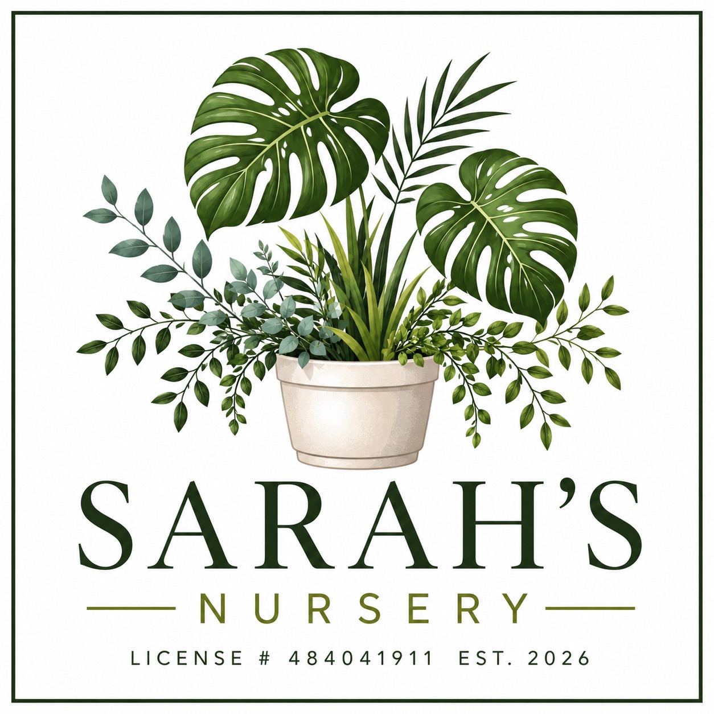

01 / ROOTED IN COMMUNITY

Some things
are better
grown together.
Sarah’s Nursery is the founder of St. Pete Plant Collective, a monthly all-plant market bringing growers, nurseries and plant lovers together in downtown St. Petersburg.
A place for the wonderfully curious. For the “just one more” collectors. For anyone who has ever fallen a little in love with a leaf.
Meet us at the market ↗